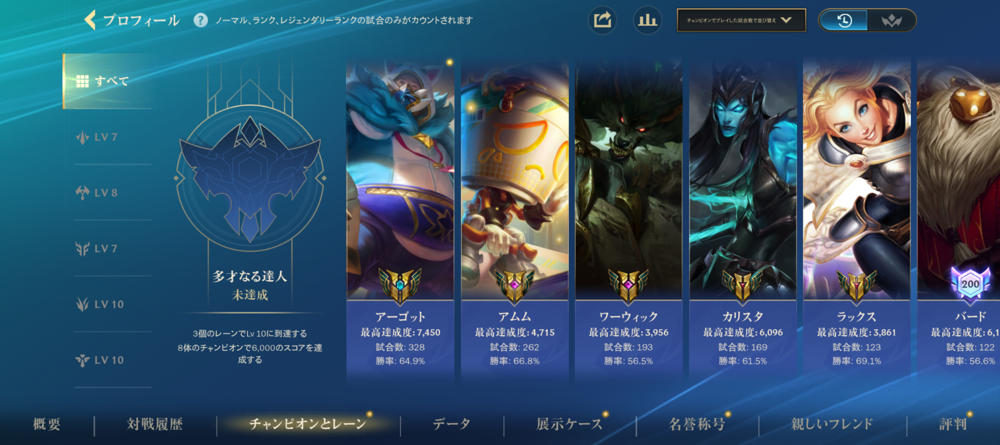

チャンピオン成績
ページ内目次
テスト動画（2026年7月更新）
今回の更新では,私のメインキャラのムービーを追加しました

このページでは、よく使用するチャンピオンについてまとめています。 チャンピオンごとの特徴を理解することで、自分に合った戦い方を考えることができます。
ヤスオ
ヤスオは高い機動力を持つファイターです。操作は難しいですが、うまく使えると試合の流れを変える力があります。
アーリ
アーリは遠距離から攻撃できるメイジです。スキルを当てる正確さが重要で、集団戦でも活躍しやすいチャンピオンです。
ジンクス
ジンクスは終盤になるほど火力が高くなるマークスマンです。安全な位置から攻撃することを意識しています。